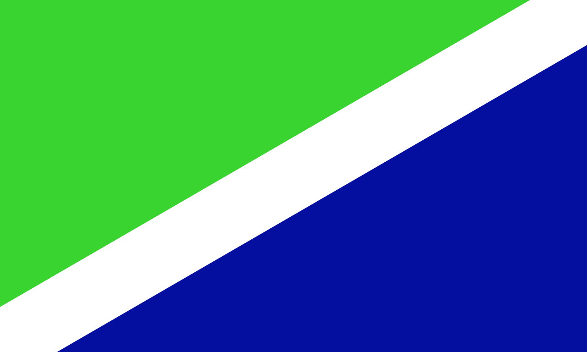
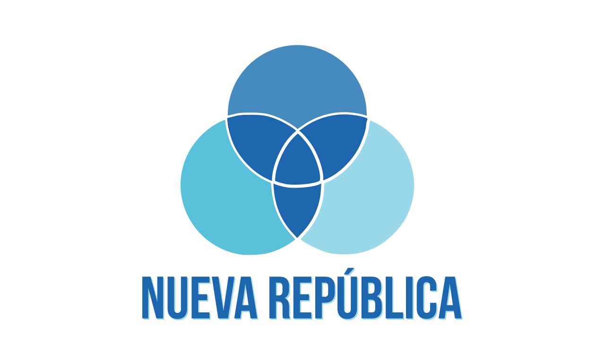

Encuestas:
| Bandera del Partido | Candidato | Encuesta 1 (12/21) | Encuesta 2 (2/22) |
|---|---|---|---|
 PLN |
Jose María Figueres Olsen | 15,95% | 18,7% |
|  PSD |
Rodrigo Chaves Robles | 3,51% | 7,3% |
 Unidad |
Lineth Saborío Chaverri | 14,14% | 14,9% |
|  Nueva República |
Fabricio Alvarado Muñoz | 14,48% | 16,9% |